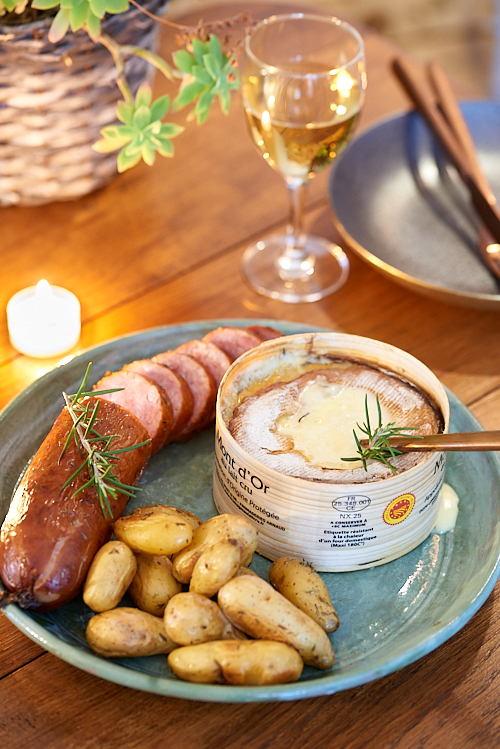
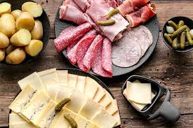
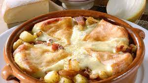
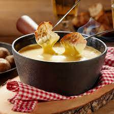

| Nom du plat | Ingrédients | Durée de préparation | Lien vers recette | Photo |
|---|---|---|---|---|
| Boite Chaude |
|
35 min | Recette Boite Chaude |  |
| Raclette |
|
25 min | Recette Raclette |  |
| Tartiflette |
|
45 min | Recette Tartiflette |  |
| Fondue Savoyarde |
|
30 min | Recette Fondue Savoyarde |  |
| Nom du plat | Ingrédients | Durée de préparation | Lien vers recette | Photo |